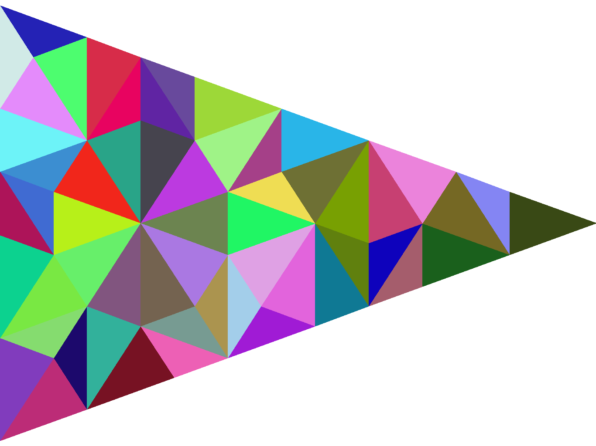
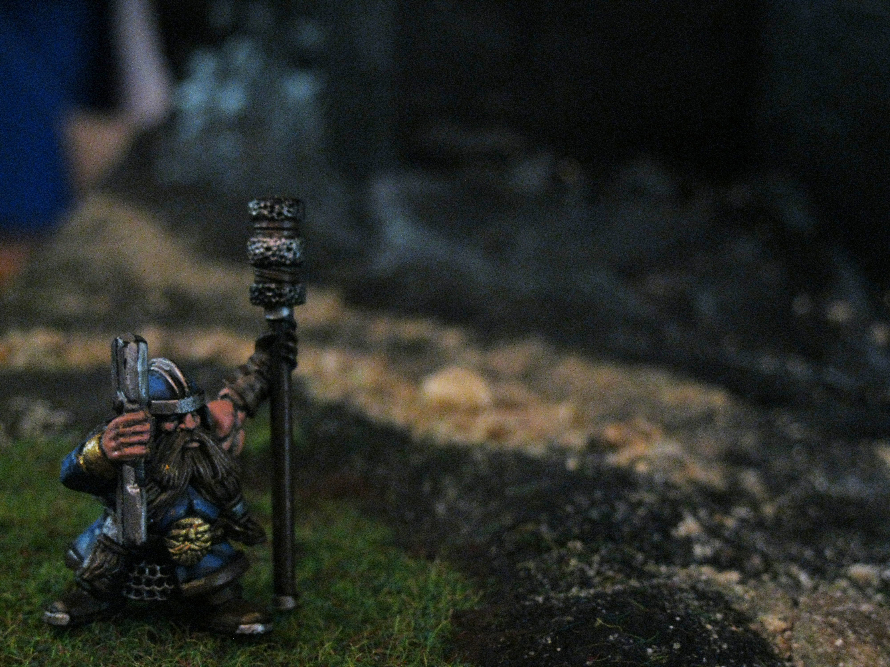
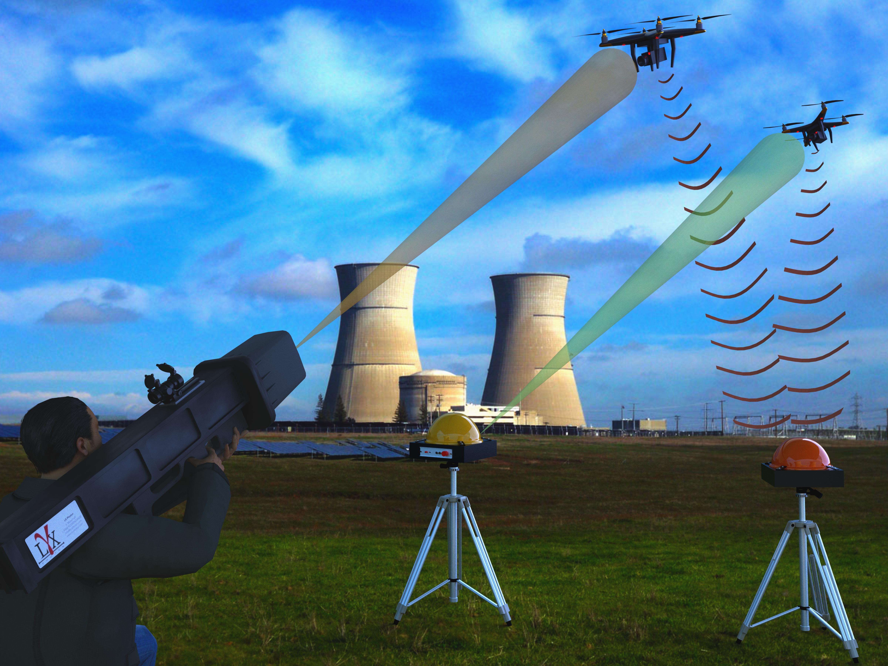
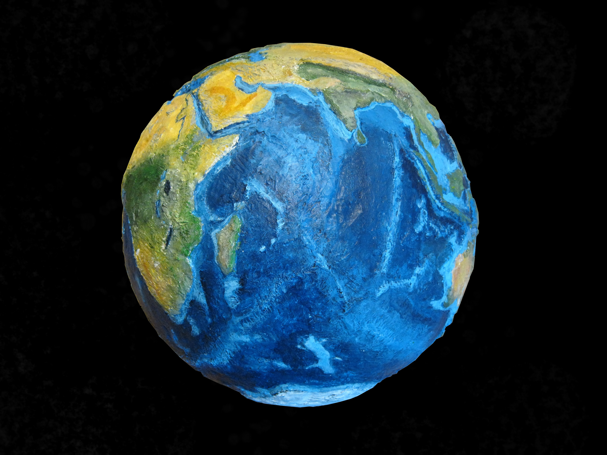
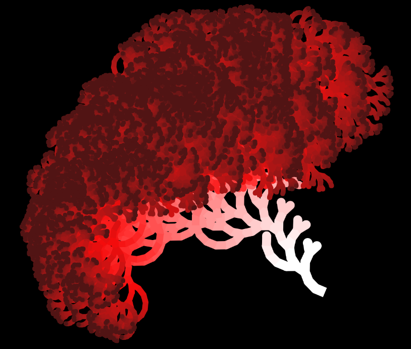
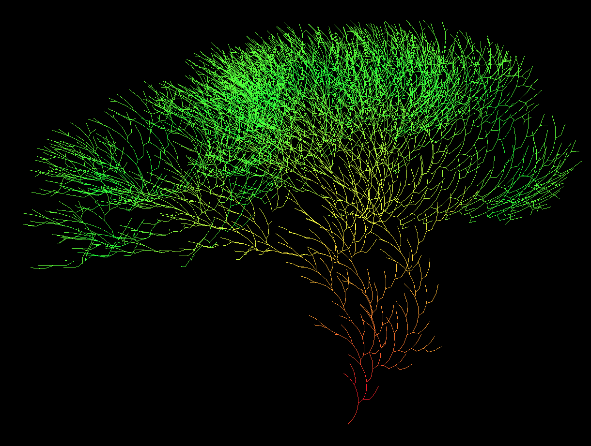
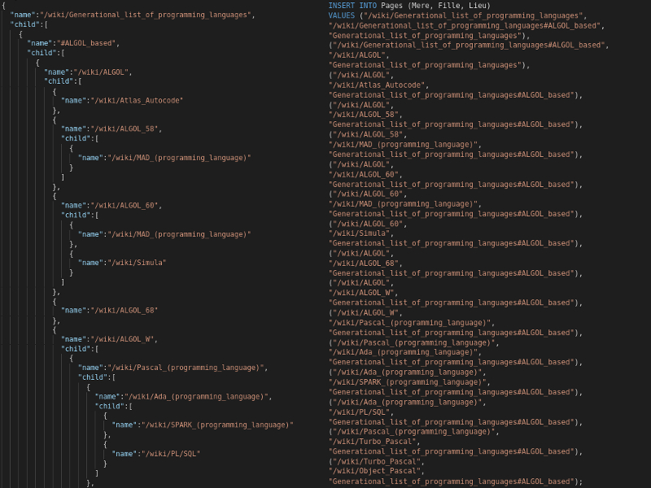
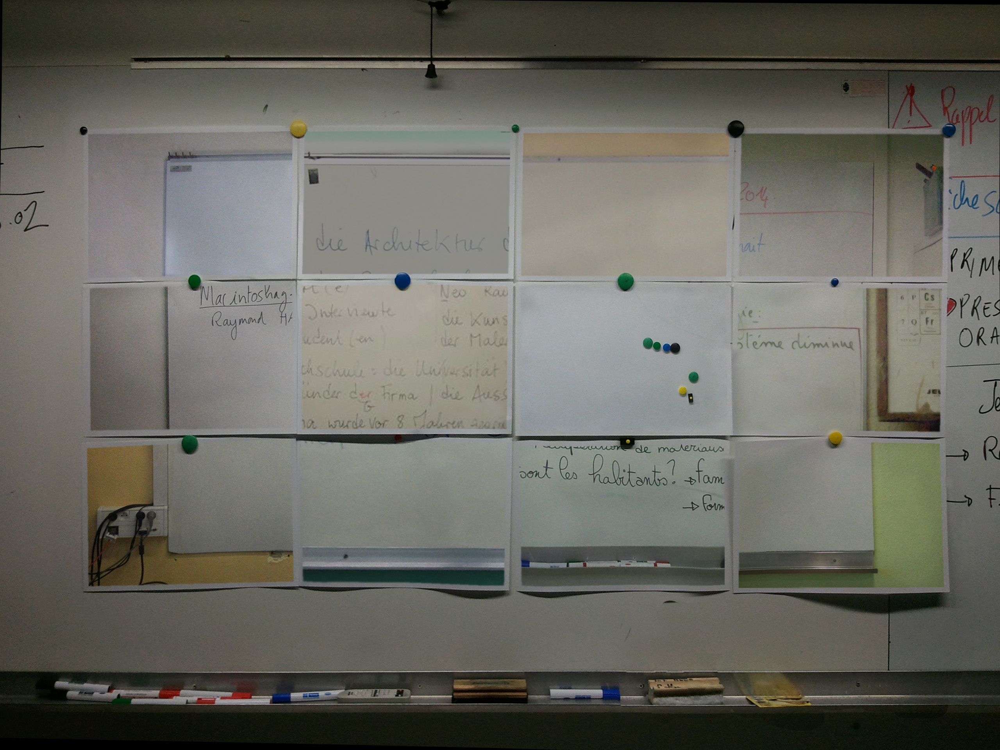

I am working on software maintenance and source code histories.
My Phd was supervised by Djamel Eddine Khelladi, Arnaud Blouin and Jean-Marc Jézéquel.
Afterward I worked as a postdoc under Andy Zaidman at TUDelft in the TestShift project for 2 years.
Current status: Postdoc
Quentin Le Dilavrec, Djamel Eddine Khelladi, Arnaud Blouin, Jean-Marc Jézéquel
ESEC/FSE 2023 - 31st ACM Conference on the Foundations of Software Engineering, Dec 2023, San Francisco (CA, USA), United States
Quentin Le Dilavrec, Djamel Eddine Khelladi, Arnaud Blouin, Jean-Marc Jézéquel
ASE 2022 - 37th IEEE/ACM International Conference on Automated Software Engineering, Oct 2022, Oakland, United States
[Distinguished Paper Award]
Note: I am currently working on a journal extension.
Quentin Le Dilavrec, Djamel Eddine Khelladi, Arnaud Blouin, Jean-Marc Jézéquel
ICMSE'21 - 37th International Conference on Software Maintenance and Evolution, Sep 2021, Virtual Event, Luxembourg
Note: I am planning a rework using the HyperAST.
(contains the benchmarks, the core library, parsers and reference analysis)
(used for the evaluation)
(contains the benchmark and the library)
Some projects of mine








Feel free to contact me via an email
PostDoc in TestShift Project, SERG, TUDelft